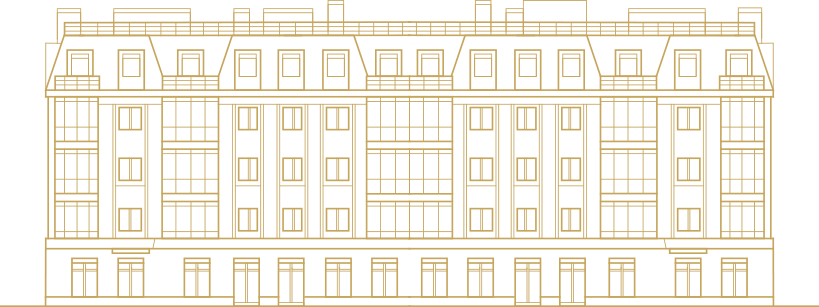

Клубный дом Авиатор
на Савушкина, 43
1. о доме
Дом располагается в сложившемся квартале малоэтажной застройки
Дом находится в 300 метрах от набережной Большой Невки. 15-20 минут на автомобиле займет путь до исторического центра города, или до курортного побережья Финского залива. Пешие прогулки можно совершать в расположенных неподалеку лучших парках города на Елагином и Крестовом острове.
Больше о доме2. комфорт и безопасность
Квартиры
Фасады здания выполнены в характерном для исторического центра Санкт-Петербурга стиле эклектики. При этом, исходя из относительно большой массы здания, предполагается разделение фасада на три части.
О квартирахПодземный паркинг
Фасады здания выполнены в характерном для исторического центра Санкт-Петербурга стиле эклектики. При этом, исходя из относительно большой массы здания, предполагается разделение фасада на три части.
О паркингеБезопасность
Фасады здания выполнены в характерном для исторического центра Санкт-Петербурга стиле эклектики. При этом, исходя из относительно большой массы здания, предполагается разделение фасада на три части.
О безопасности3. расположение
Выгодное расположение
Рядом есть все необходимые учреждения: магазины, детские сады, школы, поликлиники. Близость двух станций метро – «Черная Речка» и «Старая Деревня», а также удобные выезды на набережную и ЗСД .
О расположении4. интерьеры и архитектура
Архитектура
Фасады здания выполнены в характерном для исторического центра Санкт-Петербурга стиле эклектики. При этом, исходя из относительно большой массы здания, предполагается разделение фасада на три части.
Об архитектуреИнтерьеры
Интерьеры холлов будут выполнены по индивидуальному дизайн проекту. Запланировано использование в отделке высококачественных материалов и утонченных элементов декора, подчеркивающий стиль и индивидуальность жилого комплекса.
Об интерьерахМатериалы
Фасады здания выполнены в характерном для исторического центра Санкт-Петербурга стиле эклектики. При этом, исходя из относительно большой массы здания, предполагается разделение фасада на три части.
О материалах